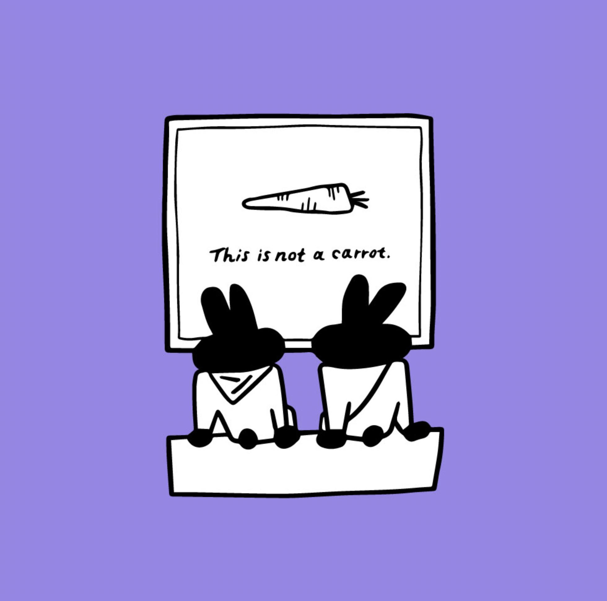
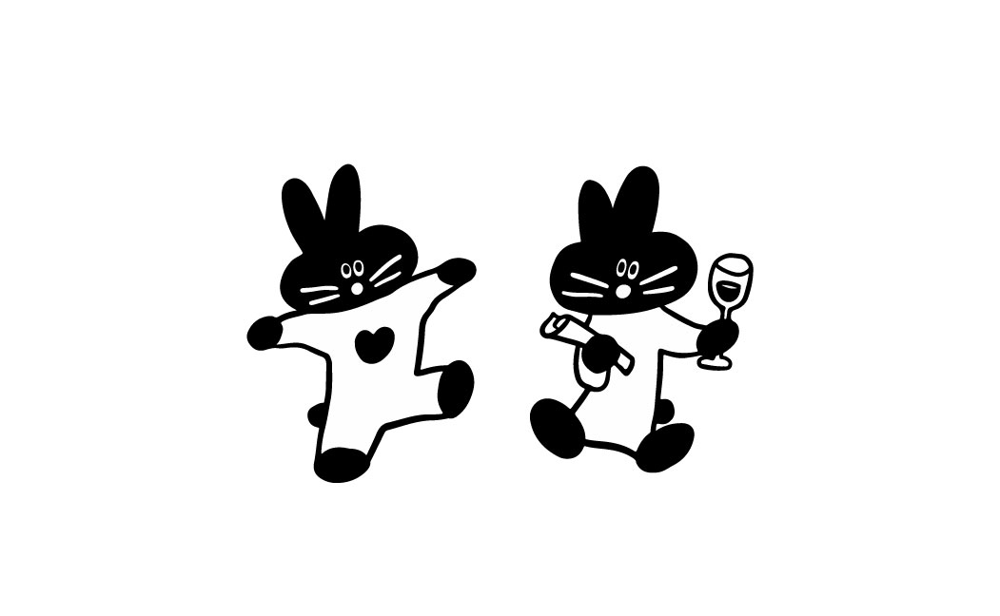
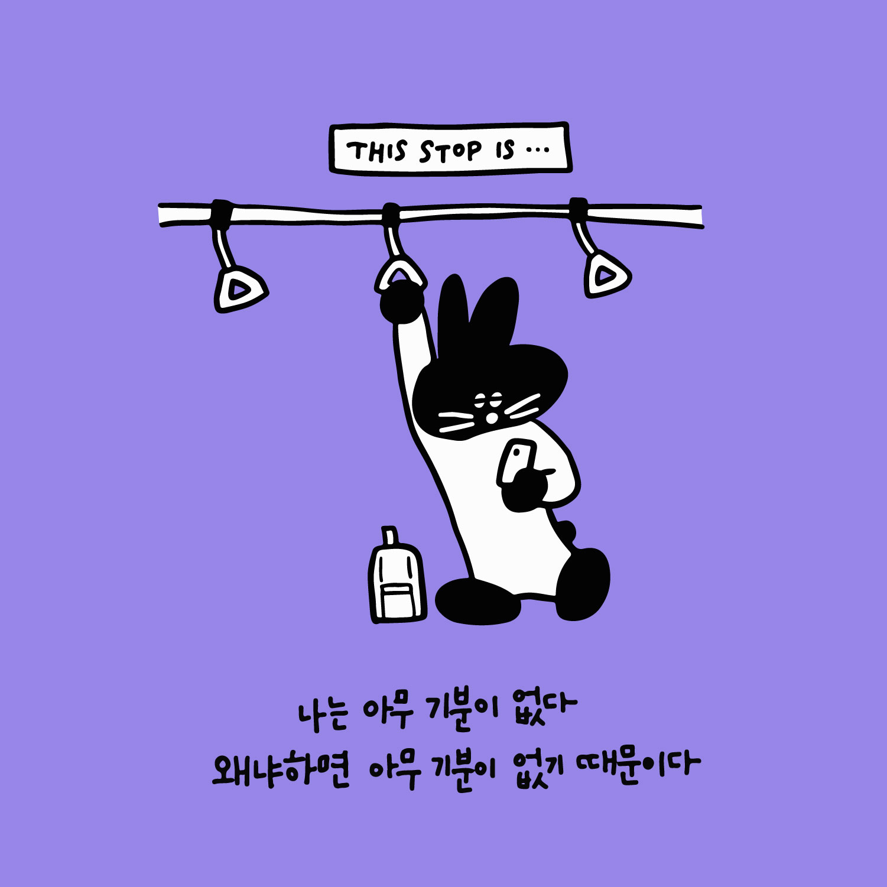
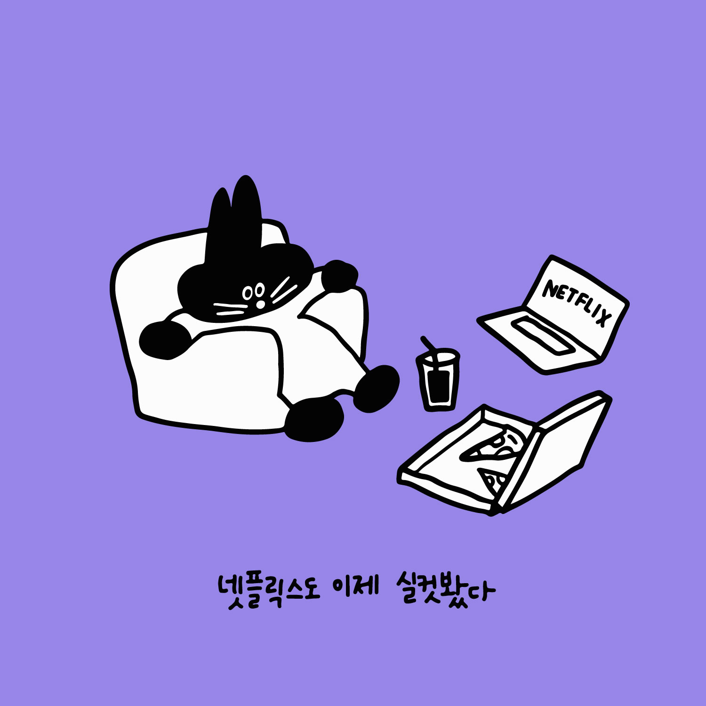
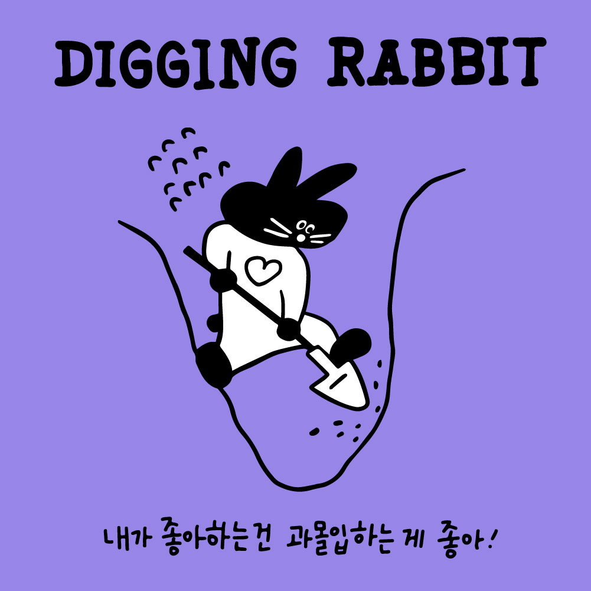
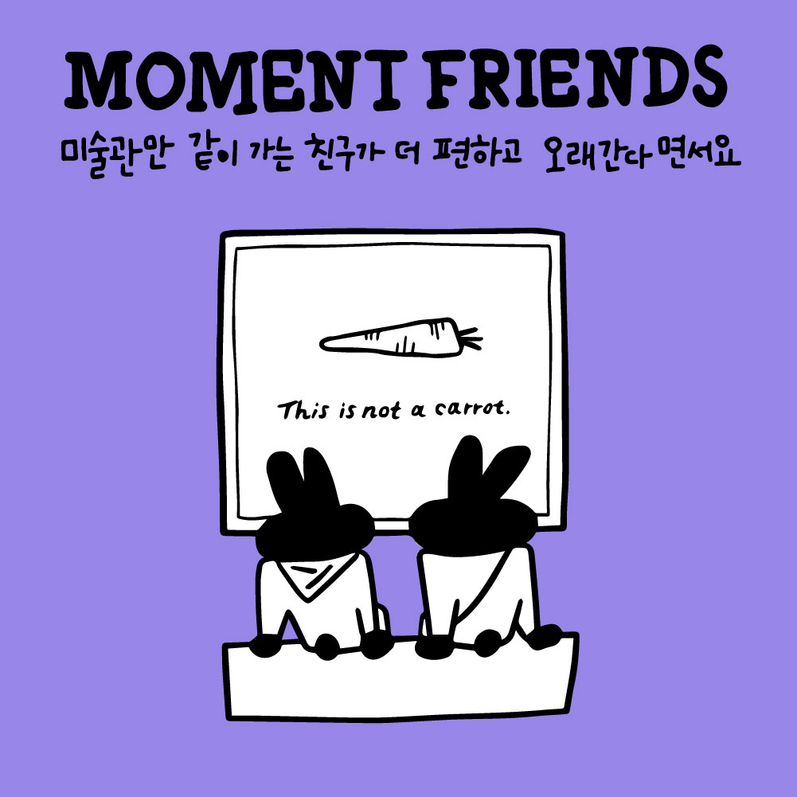
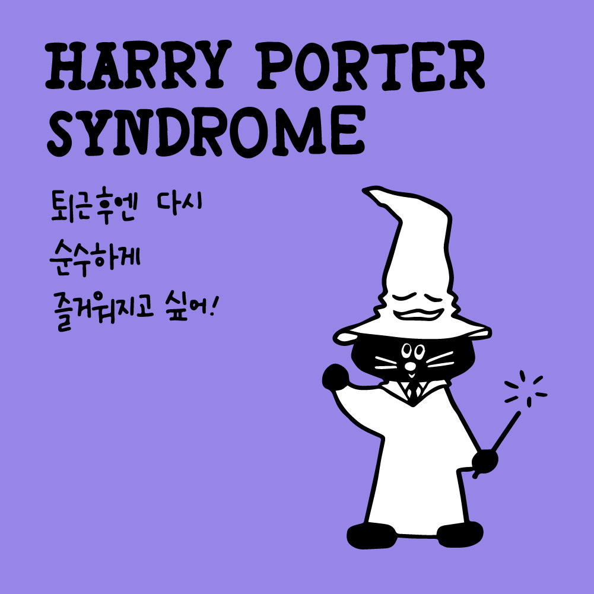
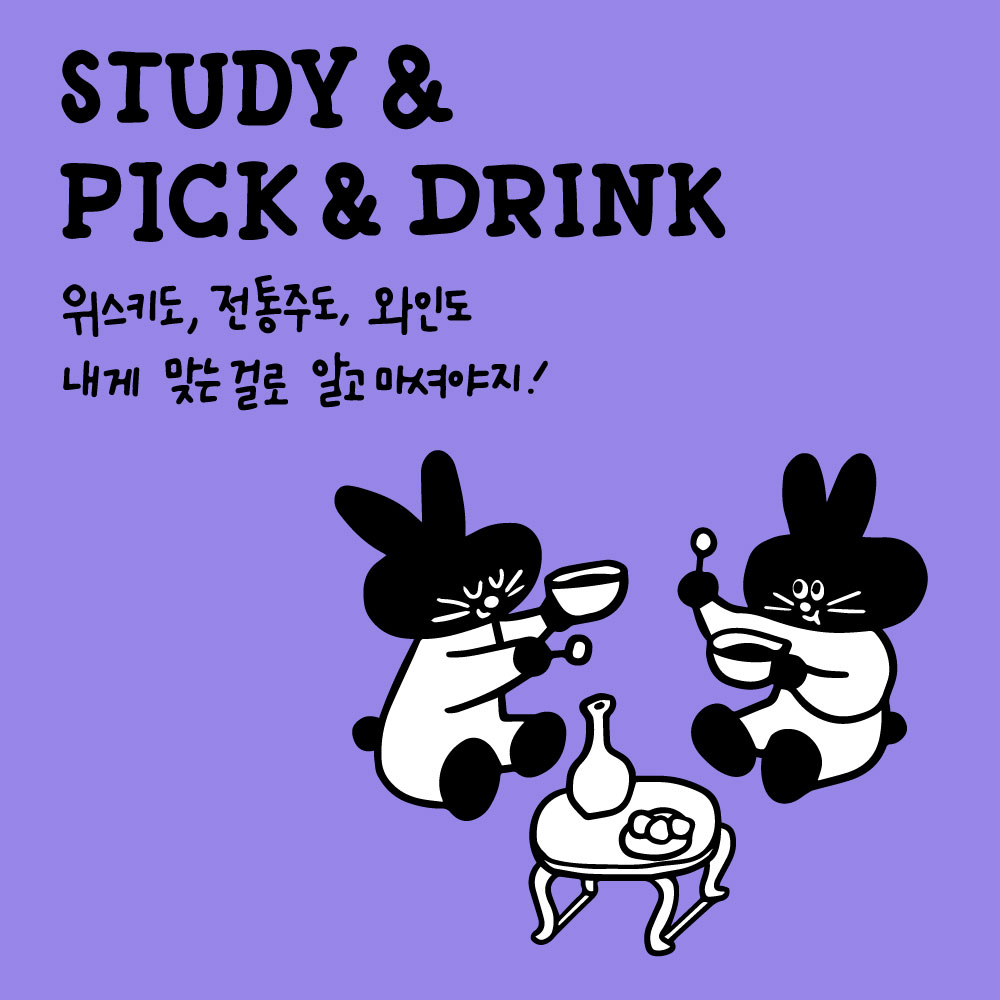

illustration
넷플연가
2023









2023년 검은토끼의 해를 맞이하여 놀기 좋아하고 모임을 좋아하는 토끼를 그렸습니다. 넷플연가에서 열리는 다양한 모임과 취미 트렌드를 소개했어요.
To welcome 2023, the Year of the Black Rabbit, I illustrated a rabbit who loves to play and gather with others — introducing the various meetups and hobby trends hosted by Nexfl Yeonga.
Client : 넷플연가